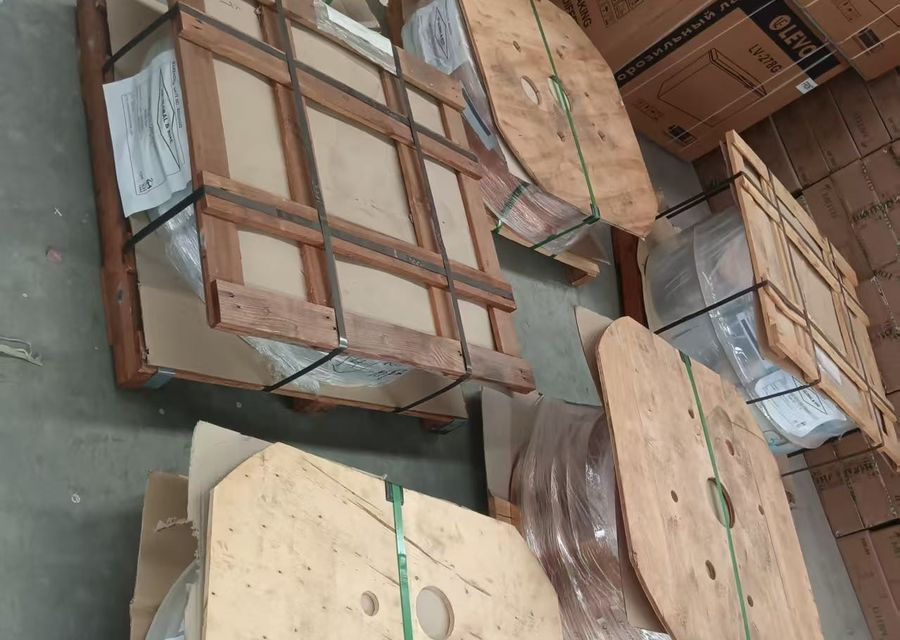

کالا: ابزار
ابزار و یراق از چین به ایران: وزن، باتری و برند پیش از بارگیری
محمولهٔ ابزار روی این کریدور یک الگوی تکراری دارد: تعداد زیادی کارتن کوچک از چند تأمینکننده، چند پالت ابزار فولادی، و یک دسته ابزار شارژی که باتری داخلش نشسته است. سه چیز در همان ابتدا سرنوشت بار را تعیین میکند: وزن، باتری، و برند. این صفحه همان سه مورد را باز میکند تا روز بارگیری غافلگیری نباشد.
- سقف هر کامیون: ۲۲ تن و ۸۰ متر مکعب، هرکدام اول برسد
- ابزار فولادی معمولاً با وزن پر میشود، نه با حجم
- ابزار شارژی: باتری لیتیومی UN3481 و برگهٔ ایمنی ۱۶ بخشی
- فقط کامیون کامل (FTL)؛ انبار به گمرک، CPT / DAP
دو دستهٔ بار، دو رفتار متفاوت
ابزار یک کالای یکدست نیست. دستهٔ اول ابزار دستی و فولادی است: انبردست، آچار، پیچگوشتی، ست سوکت، گیره، پرس دستی، تیغه و تیغچه. اینها فولاداند و چگالیشان چند برابر خط ۲۷۵ کیلوگرم بر متر مکعب است؛ یعنی تریلر هنوز پر به نظر نمیرسد که بار از نظر وزن تمام شده است.
دستهٔ دوم ابزار برقی و شارژی است: دریل، فرز، اره، ابزار باغبانی و شارژیهای مشابه. اینجا حجم سریعتر بالا میآید، چون هر دستگاه جعبهٔ خودش را دارد و جعبهها فضای خالی زیادی میسازند. محمولهٔ مختلط — چند پالت فولاد و چند ده کارتن ابزار برقی — به هر دو سقف نزدیک میشود و باید هر دو عدد را جدا حساب کنید.
وزن: عددی که باید توزینشده باشد
وزن ناخالص، نه خالص: کالا، کارتن، پالت و هر جعبهٔ چوبی روی هم. روی محمولهای که از اول نزدیک سقف بوده، وزن پالتها و جعبهها تفاوت بین جا شدن و جا نشدن است. اگر وزن خالص اعلامی نزدیک ۲۲ تن است، پالت و جعبه را پیش از بارگیری در محل تأمینکننده وزن کنید، نه پشت باسکول مرز.
باتری: تنها بخشی از این بار که ساده نیست
ابزار شارژی با باتری نصبشده در محدودهٔ UN3481 است و باتری جدا و بستهبندیشده در محدودهٔ UN3480. هر دو پیش از هر توافقی برگهٔ ایمنی کامل ۱۶ بخشی و گواهی بستهبندی UN میخواهند. ارائهٔ مدارک به معنی پذیرش حمل نیست؛ برای هر محمولهٔ باتری جداگانه بررسی میشود.
یک نکتهٔ عملی: در فهرست بار بنویسید باتری داخل دستگاه است یا جدا بستهبندی شده، چند سلول دارد و ظرفیت هر بسته چقدر است. ابزار بدون باتری، بار عمومی است و مسیر مدارک جداگانهای ندارد.
برند: بررسی قبل از بارگیری، نه بعد از آن
بخش بزرگی از ابزار چین با نام تجاری فروخته میشود. کالایی که نام یا لوگوی برند روی محصول یا کارتن دارد، پیش از هر توافقی بررسی میشود؛ ما دربارهٔ اصالت یا مجوز فروش اظهارنظر نمیکنیم و فقط مدارک را میخواهیم. کالای بدون برند و کارتن سفید این مرحله را ندارد، ولی همان وزن و همان باتری را دارد.
بستهبندی و مهار: تریلر چادری دیوار فولادی ندارد
ابزار فولادی سنگین است و سنگین یعنی لغزنده. تریلر چادری دیوارهٔ فولادی ندارد که بار به آن تکیه کند، پس مهار و لاشینگ بخشی از کار است، نه تشریفات. یک پالت ۱٫۲ تنی فولاد که نیم متر جابهجا شود، مسئلهٔ ظاهری نیست. اگر تأمینکننده خودش مهار میکند، طرح مهار را پیش از شروع بارگیری با ما هماهنگ کنید. مهار، لاشینگ، تقویت بار و هر نوع بلندکردن با جرثقیل جدا از کرایه حساب میشود.
مهر و شماره روی جعبههای چوبی (علامتگذاری حمل) را با لیست عدلبندی یکی نگه دارید. روی محمولهای که از چند تأمینکننده جمع شده، همین علامتها تنها راه تشخیص کارتن در مقصد است.
چند تأمینکننده، یک کامیون
ابزار معمولاً از چند جای مختلف میآید. کار جمعآوری در انبار مبدأ انجام میشود و بار با یک کامیون راه میافتد. این خط فقط کامیون کامل است: ما جای خالی در تریلر نمیفروشیم و کامیونی که با بخشی از ظرفیت راه میافتد هم یک کامیون کامل حساب میشود. اگر بار شما کمتر از ظرفیت یک تریلی است، تصمیم با شماست که منتظر بار دیگر بمانید یا با همان ظرفیت حرکت کنید؛ در هر دو حالت واحد حمل یکی است.
مسیر، ورودی و زمان فعلی
دو خروجی داریم: ووچیا، از قرقیزستان و ازبکستان و ترکمنستان؛ و خورگوس، از قزاقستان و ازبکستان و ترکمنستان. سمت ایران، سرخس و لطفآباد ورودی هستند، نه مقصد و نه محل ترخیص. مقصد قابل فروش گمرک مشهد یا گمرک غرب تهران است و ترخیص ایران با حقالعملکار مجاز خریدار انجام میشود، نه ما.
زمان خط ووچیا از مرز ووچیا شمرده میشود و ترخیص ایران در آن نیست. در حال حاضر کامیون مستقیم ۲۱ تا ۲۳ روز تا گمرک تهران و ۱۸ تا ۲۱ روز تا گمرک مشهد میرود؛ کامیون با تعویض بار ۲۶ تا ۳۰ و ۲۴ تا ۲۸ روز. مسیر انبار چین تا مرز ووچیا حدود ۷ روز است و جدا حساب میشود. خط خورگوس عدد روز منتشرشده ندارد و در استعلام کتبی داده میشود. اینها بازهٔ جاریاند، نه تعهد.

برای استعلام چه بفرستید
شش چیز: انبار مبدأ، گمرک مقصد، نام کالا با کد تعرفه، وزن ناخالص به کیلوگرم، حجم به متر مکعب، و تعداد بسته با ابعاد بیرونی. برای ابزار شارژی یک مورد دیگر هم اضافه کنید: وضعیت باتری. با این فهرست نرخ کتبی با تاریخ اعتبار صادر میشود. کرایه در صفحه نیست.
پرسشهای متداول
ابزار بدون باتری هم میبرید؟
بله، ابزار بدون باتری بار عمومی است. فقط وضعیت باتری را در استعلام بنویسید تا مسیر مدارک روشن شود؛ ابزار باتریدار و باتری جدا هر کدام مدارک خودشان را میخواهند.
حداقل بار برای یک کامیون چقدر است؟
حداقلی که با آن تریلی شریک شود وجود ندارد؛ این خط فقط کامیون کامل است. کامیونی که با بخشی از ظرفیت راه بیفتد هم یک کامیون کامل حساب میشود.
ابزار برقی چند روزه به تهران میرسد؟
در حال حاضر کامیون مستقیم از مرز ووچیا ۲۱ تا ۲۳ روز تا گمرک غرب تهران و ۱۸ تا ۲۱ روز تا گمرک مشهد؛ کامیون با تعویض بار ۲۶ تا ۳۰ و ۲۴ تا ۲۸ روز. مسیر تا مرز ووچیا حدود ۷ روز و جدا است.
ترخیص ایران با شماست؟
نه. تحویل در گمرک مقصد است، CPT / DAP، و ترخیص را حقالعملکار مجاز خریدار انجام میدهد. ما ترخیص ایران و تحویل درب انبار را انجام نمیدهیم.
مرتبط: باتری لیتیومی روی همین خط · سقف ۲۲ تن و ۸۰ متر مکعب · محاسبهٔ حجم و ظرفیت